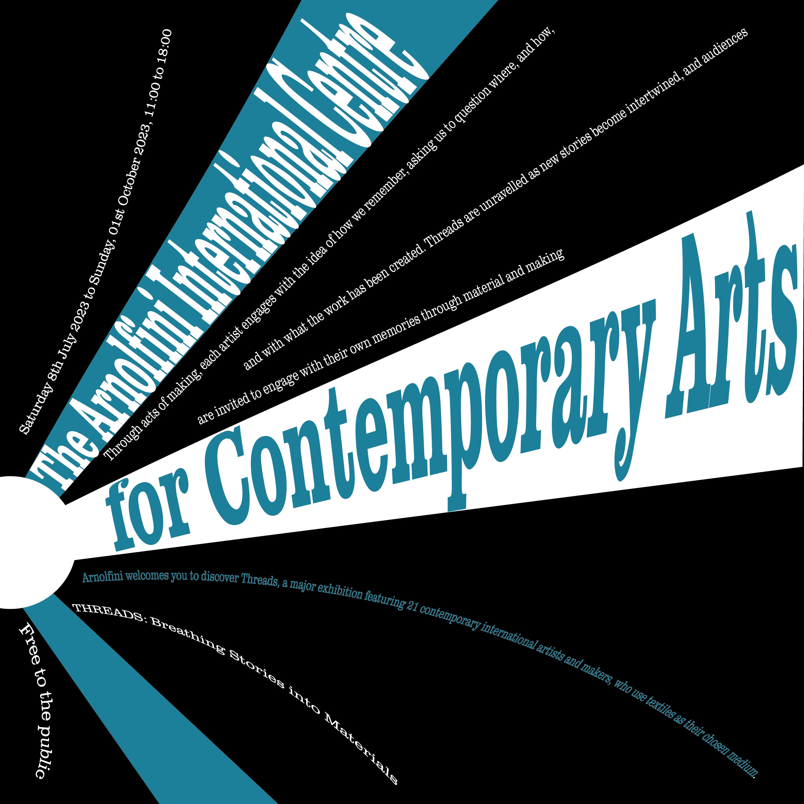

Axial

The axial typographic system is about the components placed left or right of one axis (It can be an imaginary line.) It can create more than one axis on canvas, offering a multi-layered presentation of information.
I created two axes that intersect at the centre. Each axis incorporates texts and graphics, which allows free exploration between the axes, offering a unique experience.
Radial
A radial typographic system creates a central focal point, and all the contents and components are radiated out from the point.
I placed the central point in the left-bottom corner, allowing lines and texts to radiate outward. This desgin could attract readers' attention, and the message about the exhibition could unfold fluidly.
Dilataional
The dilatational design focuses on the set along circular paths. The text and components form curves around a point.
I positioned the centre in the upper-right corner. Words and lines curve around the centre as they expand outward. I included thick lines to create an expanding effect.
Random
The random design placed the components without direction, rules and aims.
I place the components randomly. Some elements in my design are overlapped, which adds a visual interest for viewers.
Grid
Grid design relies on a structured layout. With a grid, texts and graphics are placed into columns and rows.
I created a blue rectangle on the left, which creates a visual hierarchy. On the right side, there is a hidden rectangle that maintains the grid. Information is displayed clearly.
Modular
The modular typographic system is to use the structure or shape repeatedly to break up the content.
At the top, the trapezoid and two rectangles in white contrast with the two blue rectangles, emphasizing a modular structure. Content is strategically placed within these shapes, contributing to a sense of organization. At the bottom, pentagons house additional content, maintaining the modular theme.
Transitional
Transition design is to create movement by using shapes, text and so on.
At the bottom, the waves, filled with blue and outlined in white, introduce a dynamic element. Texts with waveform are sliding from right to left. This design creates an interesting effect.
Bilateral
Bilateral design focuses on symmetry along an axis. Words are aligned along the axis from top to bottom, creating a balanced and symmetrical composition.
Besides texts, I also added symmetrical patterns on both sides to enhance the bilateral nature of the design, this presents the information clearly and provides a visually pleasing layout.